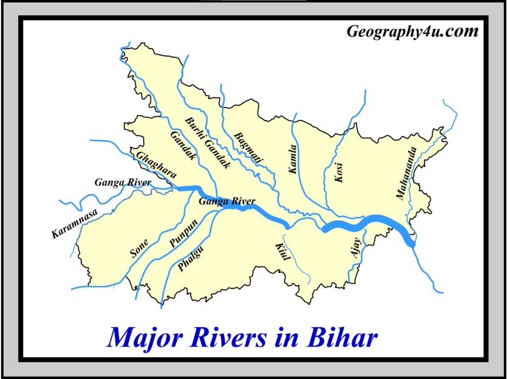

Sources · tributaries · confluences · memory tricks — tap any card to reveal.
The one rule that solves half the paper: a river's bank is decided by its direction of flow.
Ganga flows west → east, so anything joining from the north = LEFT bank,
anything joining from the south = RIGHT bank.
If you can picture the map in your head, the bank labels write themselves.
1 · The Three Families
Himalayan Rivers
Perennial — snow + rain fed, water all year. Young, deep gorges, meanders, big deltas.
Examples: Indus, Ganga, Brahmaputra.
Peninsular Rivers
Seasonal — mostly rain-fed, dry in summer. Old, shallow valleys, fixed courses.
East-flowing → Bay of Bengal. West-flowing → Arabian Sea.
Inland Rivers
Never reach the sea. Drain into desert / salt lakes.
Example: Luni (Rajasthan) — drains into the Rann of Kutch.
MIND MAP OF RIVER SYSTEMS IN INDIA
2 · Himalayan Rivers — the three giants
Tap each to reveal source, route and tributaries.
Indus River
Source: Near Lake Mansarovar (Tibet), flows through Ladakh → Pakistan → Arabian Sea.
Tributaries (the famous five): Jhelum, Chenab, Ravi, Beas, Sutlej.
Mnemonic:"J-C-R-B-S" — Just Come, Right Bank Sutlej.
Brahmaputra River
Upper course in Tibet: called Tsangpo.
Tributaries: Dibang, Lohit, Subansiri, Manas.
Note: In Bangladesh it is called Jamuna; it merges with the Ganga to form the Sundarbans delta.
Direction: West → East. Falls into: Bay of Bengal (Sundarbans delta).
Full detail in the next section.
3 · Ganga River System — the heart of the paper
The origin story: Bhagirathi (from Gangotri Glacier) + Alaknanda meet at Devprayag → the river is now called Ganga.
At Prayagraj (Allahabad) it meets the Yamuna — this is the Triveni Sangam
(the invisible third river is the mythical Saraswati).
Major confluences on the way
DevprayagBhagirathi + Alaknanda → Ganga
PrayagrajGanga + Yamuna (Triveni Sangam)
BiharGanga enters the plains — Gandak, Kosi, Son, Ghaghara join here
West BengalSplits into Hooghly + Padma (distributaries)
Left Bank tributaries (north side)
Tap to reveal each — remember, they all come from the Himalayas.
Ramganga Left
Rises in Uttarakhand, joins Ganga near Kannauj (UP). Not to be confused with the Ramganga of the Kosi system.
Gomti Left
Rises near Pilibhit (UP), passes through Lucknow, joins Ganga near Ghazipur. Not Himalayan — a plains river.
Ghaghara Left
Rises in Tibet (from Mapchachungo glacier), known as Karnali in Nepal.
Joins Ganga at Chapra (Bihar).
Its own tributary is the Sharda (Mahakali) — Sharda is NOT a direct tributary of the Ganga.
Gandak Left
Rises in Nepal (near Tibet border), also called Narayani. Joins Ganga at Sonepur (Bihar). Forms the famous Sonepur cattle fair area.
Kosi Left
Rises in Nepal (Mount Everest region). Famous as the "Sorrow of Bihar" — changes course often, causes massive floods. Joins Ganga near Katihar (Bihar).
Sharda (Mahakali) → Ghaghara
Rises in the Pithoragarh region (Kumaon Himalayas). Forms the India–Nepal border for a stretch. Joins the Ghaghara, NOT the Ganga directly.
Right Bank tributaries (south side)
These come from the Peninsular plateau — older, seasonal, mostly rain-fed.
Yamuna Right
Source: Yamunotri Glacier.
Tributaries: Chambal, Betwa, Banas — these three together form the Yamuna System.
Longest tributary of the Ganga. Joins at Prayagraj.
Chambal Right (via Yamuna)
Rises in the Vindhyas (MP). Famous for its ravines (badlands). Flows through MP, Rajasthan, UP.
Betwa Right (via Yamuna)
Rises in MP, passes through Orchha (famous for the Betwa riverfront). Joins Yamuna in UP.
Banas Right (via Chambal)
Rises in the Aravallis (Rajasthan). Joins the Chambal, not the Yamuna directly. Note the chain: Banas → Chambal → Yamuna → Ganga.
Son Right
Rises near Amarkantak (MP). Largest southern tributary of the Ganga. Joins near Patna (Bihar).
Damodar Right
Rises in Chotanagpur plateau (Jharkhand). Known as the "Sorrow of Bengal". Joins the Hooghly (a distributary of Ganga), not the Ganga directly.
The distributary
Hooghly Distributary
The westernmost distributary of the Ganga. The Damodar joins it. Flows past Kolkata into the Bay of Bengal. The other main distributary is the Padma (which goes into Bangladesh).
GANGA RIVER SYSTEM
4 · The two memory tricks that save you
Trick 1 — Left vs Right bank.
Ganga flows W → E. So when you face downstream (west to east):
• Left hand points north → Left bank = Himalayan rivers.
• Right hand points south → Right bank = Peninsular rivers.
Trick 2 — Left bank mnemonic: "RaGoGhaGaKo" → Ramganga, Gomti, Ghaghara, Gandak, Kosi.
Right bank mnemonic: "Ya-So-Da" → Yamuna, Son, Damodar.
5 · Peninsular Rivers
East-flowing (→ Bay of Bengal)
These form deltas — like the Ganga.
Godavari
Largest peninsular river — called "Dakshin Ganga". Source: Trimbakeshwar (Nashik, Maharashtra). Tributaries: Pranhita, Indravati. Delta: Coringa.
Source: Talakaveri (Karnataka, Brahmagiri hills). Tributaries: Hemavati, Bhavani, Kabini. Flows through Karnataka → Tamil Nadu.
West-flowing (→ Arabian Sea)
These form estuaries — NOT deltas (because of fast flow + hard rock).
Narmada
Source: Amarkantak (MP). Flows through a rift valley. No major tributaries. Famous for the Narmada Bachao Andolan.
Tapi (Tapti)
Also rises near Amarkantak. Flows through a parallel rift valley. No major tributaries.
Mahi
Rises in MP, flows through Gujarat and Rajasthan. No major tributaries. Crosses the Tropic of Cancer twice.
Sabarmati
Rises in the Aravallis (Rajasthan), flows through Ahmedabad (Gujarat). No major tributaries. Site of Sabarmati Ashram.
6 · Inland Rivers
Luni
The only major inland river of Rajasthan. Rises near Ajmer (Naga Hills / Aravallis). Flows into the Rann of Kutch — does not reach the sea. Its water is mostly saline in the lower course.
7 · Rivers of Bihar — special focus
Bihar is a "river state" — the Ganga cuts right through it, and almost every major north Indian river passes through.
If a question asks about Bihar's rivers, picture the Ganga running across the middle, with Himalayan rivers joining from the north and Peninsular ones from the south.
Rivers flowing through Bihar (tap each to check):
Ganga
Enters Bihar near Chausa (Buxar), flows west → east, exits into West Bengal near Rajmahal hills. Length in Bihar ≈ 445 km.
Ghaghara
Joins Ganga at Chapra (Saran district). Also called Karnali in Nepal.
Gandak
Joins Ganga at Sonepur (Saran district). Also called Narayani.
Kosi
The "Sorrow of Bihar". Joins Ganga near Katihar / Kursela. Known for shifting its course by miles every few years.
Son
Joins Ganga near Patna (Danapur). Rises at Amarkantak. Its tributaries include the North Koel and South Koel.
Punpun
Rises in the Chotanagpur plateau (Jharkhand), flows through Patna district, joins the Son. Ancient name: Punpun.
Phalgu
Flows through Gaya (famous for the Phalgu at Bodh Gaya). Joins the Punpun.
Kiul
Rises in the Chotanagpur plateau, flows through Lakhisarai district, joins the Ganga near Munger.
Bagmati
Rises in Nepal (Shivapuri hills), flows through north Bihar (Muzaffarpur, Darbhanga), joins the Kosi. Known for severe floods.
Burhi Gandak
Rises in Nepal, flows parallel to the Gandak, joins the Ganga near Khagaria. Not to be confused with the Gandak itself.
Karmanasa
Forms the border between Bihar (Kaimur) and UP (Chandauli). Joins the Ganga near Buxar.
Sone (as a whole)
Rises at Amarkantak (MP), flows through MP, UP, Jharkhand, and joins Ganga near Patna. Its valley is one of India's richest mineral belts (coal, bauxite, limestone).

MAJOR RIVER SYSTEM OF BIHAR
Bihar-specific memory hooks
Kosi = Sorrow of Bihar — remember by its frequent course changes.
Gandak joins at Sonepur — remember the Sonepur Cattle Fair held at the confluence.
Ghaghara joins at Chapra — "Cha" in Chapra rhymes with "Gha" in Ghaghara.
Son joins near Patna — Son rises from Amarkantak, the same place as the Narmada.
Bagmati + Burhi Gandak + Kosi = the flood trio of north Bihar.
8 · Rapid Fire
Answer out loud, then tap to check.
Source of the Bhagirathi?
Gangotri Glacier
At which confluence do the Bhagirathi and Alaknanda meet?
Devprayag
Where does the Yamuna meet the Ganga, and what is this confluence called?
Prayagraj (Allahabad) — Triveni Sangam
Which river is called the "Sorrow of Bihar"?
Kosi
Which river is called the "Sorrow of Bengal"?
Damodar
Largest peninsular river of India?
Godavari — also called Dakshin Ganga
Which two rivers flow through rift valleys and have no major tributaries?
Narmada and Tapi
Which peninsular river flows through a rift valley, rises at Amarkantak, and is famous for the Narmada Bachao Andolan?
Narmada
On which river is the Hirakud Dam built?
Mahanadi (Odisha)
Sharda (Mahakali) is a tributary of which river — Ganga or Ghaghara?
Ghaghara (not the Ganga directly)
Banas is a tributary of which river — Yamuna or Chambal?
Chambal
Which is the only major inland river of Rajasthan?
Luni — drains into the Rann of Kutch
Ganga enters Bihar near which town, and exits near which hills?
Enters near Chausa (Buxar); exits near Rajmahal hills
At which towns do the Ghaghara, Gandak and Kosi join the Ganga?